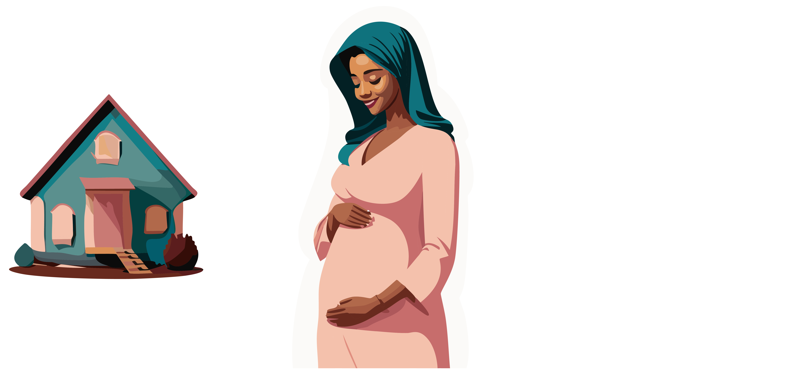

f_surgery <- function(u_surgery) { # pa_surgery = {}
u_surgery
}
f_los <- function(surgery, u_los) { # pa_los = {surgery}
surgery + u_los
}
f_survival <- function(surgery, los, u_survival) { # pa_survival = {sugery, los}
survival = los - 2 * surgery + u_survival
}
scm1 <- function(u_surgery, u_los, u_survival) {
surgery = f_surgery(u_surgery)
los = f_los(surgery, u_los)
survival = f_survival(surgery, los, u_survival)
c(surgery=surgery, los=los, survival=survival)
}
scm1(2, 1, 5)DAGs 2
introduction
2024-08-06
Example task: are hospital deliveries good for babies?



New question: can a patient walk 1 week after getting a hernia?


DAGs
- nodes are variables
- arrows point from cause to effect


tikz example

Figure 3
Specifying a distribution for exogenous variables U
u_surgery u_los u_survival
4.084401 5.922358 8.287207 
A Probabilistic Causal Model is a SCM with a distribution over U
u_surgery u_los u_survival surgery los survival
6.0899161 0.5511031 10.9747907 6.0899161 6.6410193 5.4359778 
Recursive Structural Causal Models imply a Directed Acyclic Graph
An SCM is recursive, i.e. acyclic when following the chain of parents, you never end up at the same variable twice

Recursive Structural Causal Models imply a Directed Acyclic Graph
An SCM is recursive, i.e. acyclic when following the chain of parents, you never end up at the same variable twice

Recursive Structural Causal Models imply a Directed Acyclic Graph
An SCM is recursive, i.e. acyclic when following the chain of parents, you never end up at the same variable twice

scm1 and the DAG are equivalent (they describe the same knowledge of the world)
for the remainder, we assume recursiveness
Submodel and Effect of Action as a mutilated DAG
In scm1 replace f_los with a specific value (e.g. 7 days):
surgery los survival
2 7 8 . . .

The DAG describes a submodel where \(T\) no longer ‘listens’ to any variables but is controlled to be equal to a specific value (7)
Limitations of DAGs
- the number of possible dags grows super-exponentially in the number of nodes
- 8: >700 billion
- 9: >1000 trillion
- DAGs are great thinking tools but maybe not suitable as a formal identification approach?

A003024, https://oeis.org/A003024/list
References

Pearl, Judea, ed. 2009. “The Logic of Structure-Based Counterfactuals.” In Causality, 2nd ed., 201–58. Cambridge: Cambridge University Press. https://doi.org/10.1017/CBO9780511803161.009.